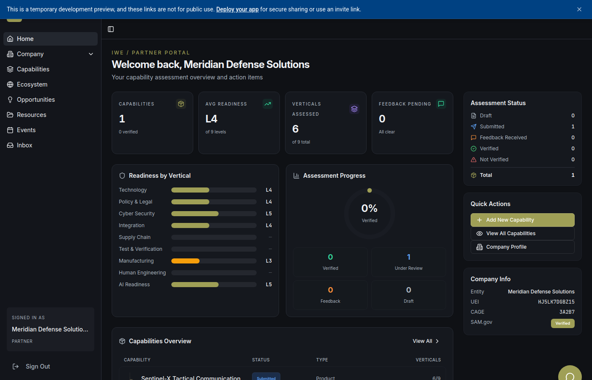
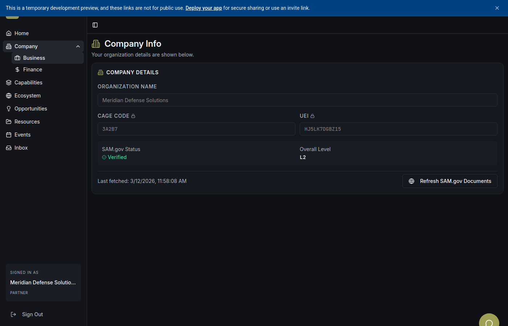
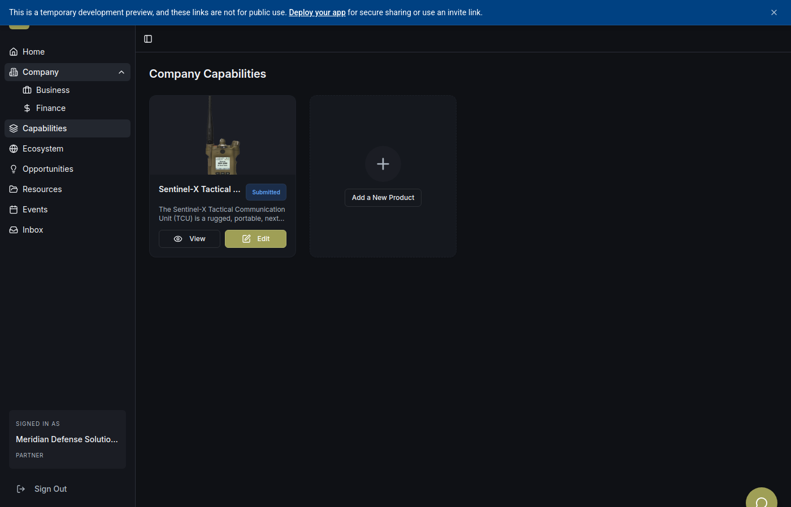
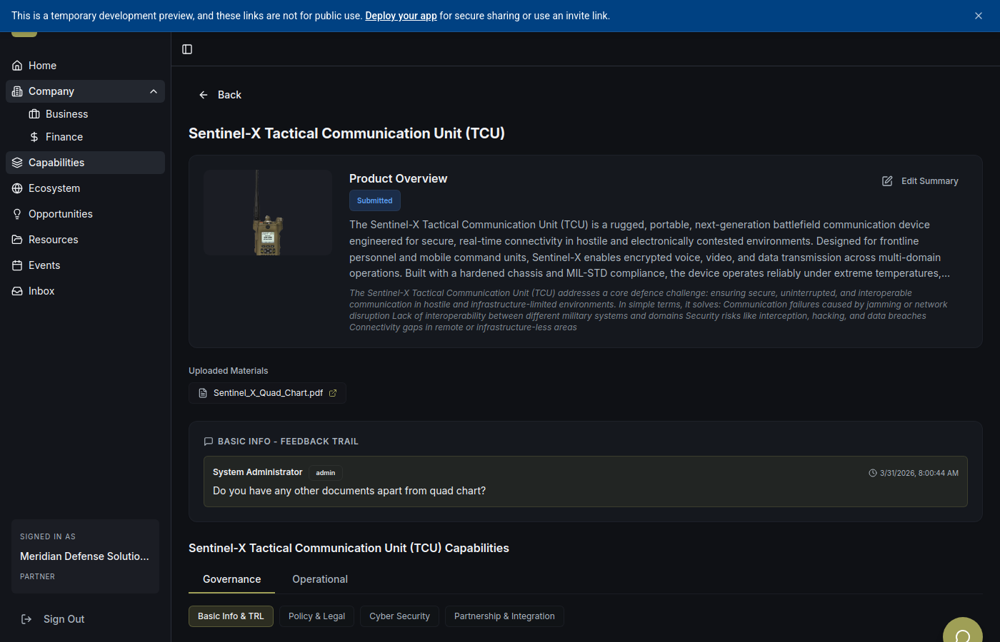
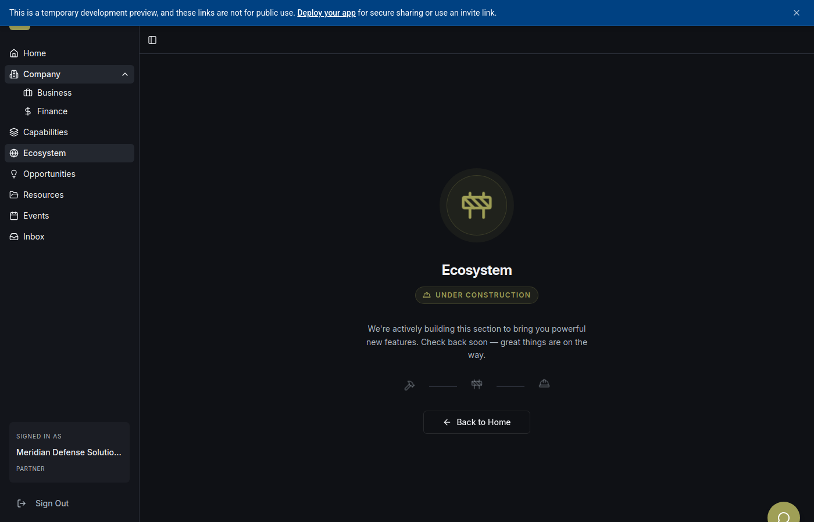

1 Getting Started & Logging In
Navigate to the IWE platform URL. Enter your partner credentials on the login screen:
- Username: Your assigned partner organization username
- Password: Your secure partner password
Click LOGIN to access your partner portal. If this is your first login and your organization hasn't completed onboarding, you will be guided through the Partner Wizard to set up your company profile.
2 Partner Home Dashboard
After logging in, you'll land on the Partner Home dashboard. This is your central hub showing an overview of your organization's status and submitted capabilities.

Figure 1: Partner Home dashboard showing organization overview and capability status
- Organization Summary: Your company profile snapshot and key metrics
- Capability Status: Overview of all submitted capabilities and their review status
- Notifications: Recent feedback or status changes from administrators
The IWE sidebar on the left provides navigation to all sections. Your signed-in identity and role are displayed at the bottom of the sidebar.
3 Company Profile
Under the Company dropdown in the sidebar, you can access your Business and Finance information pages.

Figure 2: Company profile and business information form
Business Information
- Company Name & Description: Your official organization name and overview
- Contact Information: Primary POC, email, phone
- Identifiers: CAGE code, DUNS number, and SAM registration
- Address: Physical and mailing address details
Ensure all company information is accurate and up-to-date before submitting capabilities. This information is used during the assessment review process.
4 Capabilities Overview
The Capabilities page shows all your submitted product/service capabilities. Each capability represents a specific offering you'd like evaluated under the WRA 2026 framework.

Figure 3: Capabilities list showing submitted offerings and their status
- Capability Cards: Each card shows the capability name, type (product/service), and review status
- Status Indicators: Track whether your capability is Draft, Submitted, Verified, Not Verified, or Feedback Sent
- Actions: View details, edit, or create new capabilities
5 Creating a New Capability
Click "New Capability" to launch the 4-step capability wizard. This guided process walks you through providing all necessary information for your assessment.
Step 1: Basic Information
- Capability Name: Official name of your product or service
- Offering Type: Product or Service
- Description: Detailed overview of what the capability does
- Problem Statement: The defense challenge your capability addresses
- Image: Product photo or representative image
Step 2: Supporting Materials
- Quad Chart: Upload your standard quad chart (PDF)
- Additional Documents: Any supplementary materials
Step 3: Vertical Assessments
This is the core of your capability submission. For each applicable readiness vertical, you'll:
- Select your claimed maturity level (L1–L9)
- Check the required artifacts that you can provide evidence for
- Upload documents as evidence for the selected artifacts
- Add optional compliance remarks and additional evidence notes
Step 4: Review & Submit
- Review all entered information across all steps
- Upload an optional Whitepaper
- Click Submit to send your capability for admin review
Once submitted, your capability enters the admin review pipeline. You will receive feedback or status updates through the platform.
6 Understanding the 9 Readiness Verticals
Each capability is assessed across up to 9 readiness verticals. These measure different dimensions of your offering's maturity and compliance:
TRL
Technology Readiness Level
PRL
Programmatic Readiness Level
CRL
Cybersecurity Readiness Level
IRL
Integration Readiness Level
SCRL
Supply Chain Readiness Level
TVRL
Test & Verification Readiness Level
MRL
Manufacturing Readiness Level
HRL
Human Factors Readiness Level
AIRL
AI Readiness Level
Maturity Levels (L1–L9)
Each vertical uses a 9-level maturity scale:
- L1–L3: Early-stage concept and feasibility
- L4–L6: Development and demonstration
- L7–L9: Production-ready and operationally proven
Artifacts & Evidence
Each maturity level has specific required artifacts defined by DoD policy frameworks. When you select a maturity level, the system shows which artifacts are required and which you've checked off. Upload supporting documents (PDFs) as evidence.
AI Compliance Scoring
Uploaded documents are analyzed by AI against relevant DoD policy frameworks. Each document receives a compliance score (0–100) with detailed rationale explaining what was found and what may be missing.
Higher compliance scores indicate better alignment with policy requirements. Scores below 50 typically indicate the document lacks substantive content for the claimed artifact.
7 Viewing Your Capability
Click any capability to open the detailed Capability View. This read-only view shows everything you've submitted.

Figure 4: Detailed capability view showing vertical assessments and compliance scores
- Basic Info: Capability name, type, description, problem statement, and image
- Vertical Assessments: Expandable sections for each vertical showing your claimed level, artifacts, and uploaded documents
- Compliance Scores: AI-generated document compliance scores with color-coded indicators
- Admin Feedback: Any remarks or feedback from administrators will appear here
- Status: Current review status (Submitted, Verified, Not Verified, Feedback Sent)
8 AI Partner Assistant
The AI Partner Assistant is available via the floating chat button on every page. It provides context-aware help for your capability submissions.
- Capability Guidance: "How do I fill out a new capability?"
- Document Requirements: "What documents do I need for each vertical?"
- Vertical Explanations: "Explain the TRL section"
- Level Descriptions: "What does each maturity level mean?"
- Feedback Help: "Why did I receive feedback on my submission?"
- Score Improvement: "How can I improve my readiness scores?"
Use the preset questions for quick answers, or ask anything about the submission process, verticals, artifacts, or policies.
9 Upcoming Features
The following sections are currently under development and will be available soon:

Figure 5: Work in Progress page for upcoming features
- Finance: Financial management and reporting
- Ecosystem: Partner ecosystem mapping and collaboration
- Opportunities: Defense opportunity matching and discovery
- Resources: Document library and reference materials
- Events: Industry events calendar and registration
- Inbox: Messaging and communication center